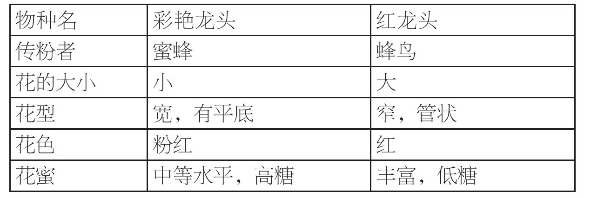
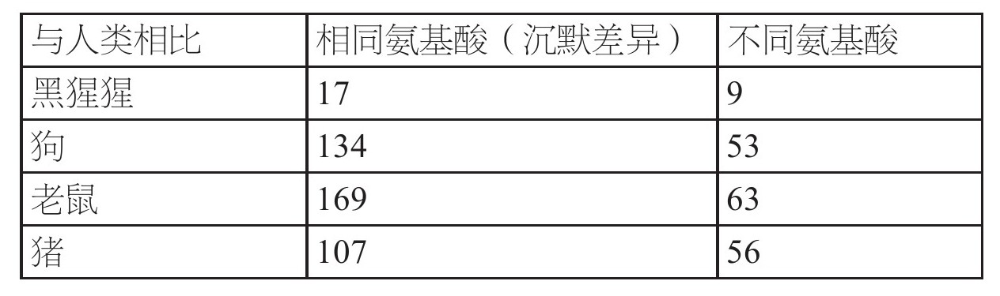
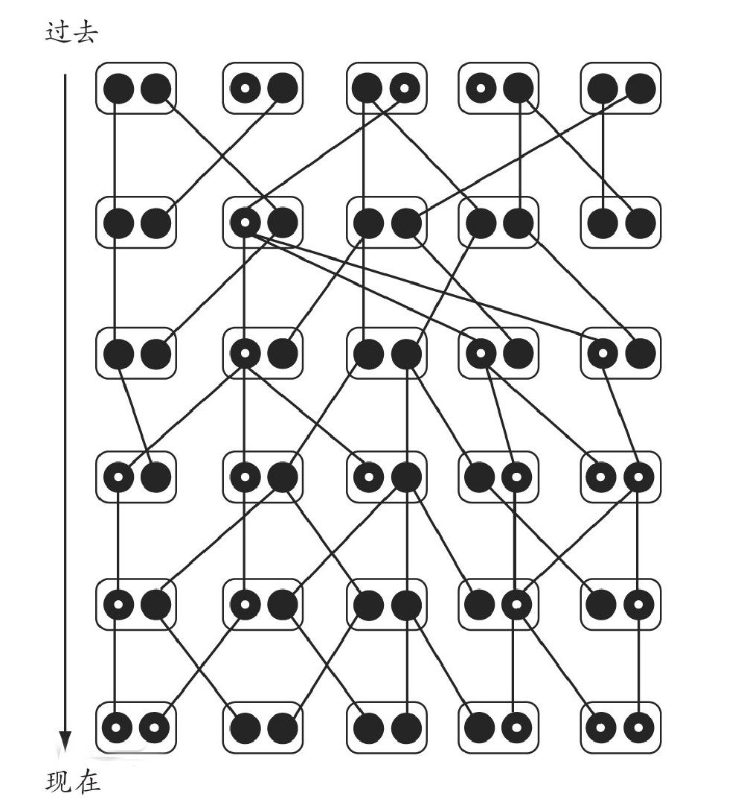
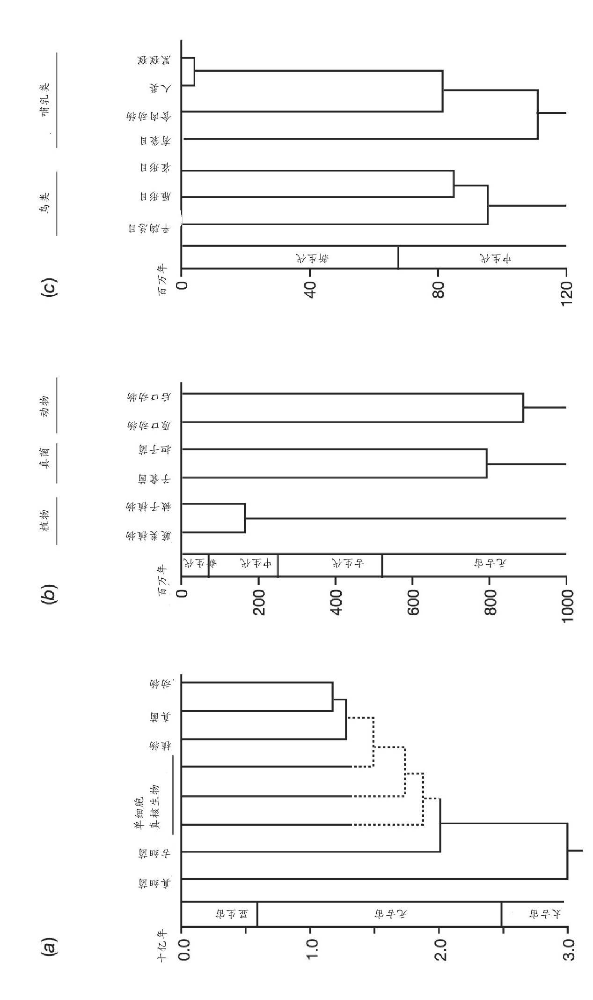

生物学的常见事实之一就是将生物划分为可辨识的不同物种。随便看看生活于欧洲西北部一座小镇上的鸟类，甚至都可以发现很多种类：知更鸟、乌鸫、画眉、槲鸫、蓝冠山雀、大山雀、鸽子、麻雀、燕雀、八哥，等等。每一个种类都有着与众不同的身型、羽毛颜色、鸣叫声、进食和筑巢的习惯。在北美东部，可以找到一系列不同但又大致相似的鸟类。同一种类的雄鸟和雌鸟成双成对，它们的后代当然也跟它们同属于一个种类。在一个给定的地理位置中，有性繁殖的动植物几乎总是可以容易地被划分为不同的群体（虽然有时细致的观察所找到的物种只存在很轻微的解剖学上的差异）。由于异种之间并不杂交，所以共同生活在同一地点的不同物种保持着区别。多数生物学家认为不能杂交（生殖隔离 ）是划分不同物种的最好标准。对于那些不通过有性繁殖产生后代的生物，比如许多种类的微生物来说，情况就复杂得多。这点我们将在后面再进行探讨。
物种间差异的本质
尽管，就像习惯于重力一样，我们习惯于将生物体划分为独立的物种，并认为这是理所应当的，但划分物种并不是显然有必要的。很容易想象一个不存在如此明显差异的世界；以上文提到的鸟为例，有可能存在着生物体具有混合的特征，比如，不同比例混合了知更鸟和画眉的特征；对于给定的一对亲代来说，按不同比例交配可以产生带有不同混合特征的后代。如果没有不同物种间的杂交繁殖障碍，我们现在所看到的生物多样性将不复存在，取而代之的是一些接近于连续的形态。事实上，当出于某种原因，已经分离了的物种间的杂交繁殖障碍打破时，确实会产生出如此高度变异的后代。
因而对于进化论者来说，一个根本问题是要解释物种是如何变得彼此不同的，以及为什么会存在生殖隔离。这是本章的主题。在开始这个问题之前，我们先介绍一下近缘种被阻止杂交的一些途径。有时，主要的障碍是物种间生境或繁殖时间的简单差别。以植物为例，每年都有一段典型的短暂花期，花期没有重叠的植物显然不可能杂交。对于动物来说，不同的繁殖场所可以防止不同物种的个体相互交配。即便是有些生物体在同一时间到达了同一地点，那些只有通过对物种生活史的细致研究才能发现的细微特征，常常可以阻止不同物种的个体互相交配。生物体的一些细微特征只有通过对物种自然史的细致研究才能发现，这些特征往往阻止不同物种的个体成功地彼此交配。例如，由于对方没有恰当的气味和声音，一种生物可能不愿意去向其他物种的生物求偶，或是所展现出的求爱方式相异。交配上的行为学障碍在许多动物中都很明显，植物则通过化学手段辨别来自异种生物的花粉并拒绝它。即使发生了交配，来自异种生物的精子也可能无法成功让雌性的卵子受精。
然而，一些极为近缘的物种间偶尔会发生交配，特别是在没有同种个体可供选择的情况下（如第五章中提到的狗、土狼、豺狼）。但在很多此类情形下，杂交第一代常无法发育；异种个体间试验性交配所产生的杂交体，常会在发育早期死亡，反之，同种个体间交配所产生的大部分后代都可以发育成熟。有些时候，杂交个体能够生存下来，但要比非杂交体的存活概率低很多。即使杂交体能够存活下来，通常也是不育的，不会产生能将基因继续传递下去的后代；骡子（马和驴交配产生的杂交体）就是一个著名的例子。杂交体完全地不能存活或是无法生育显然可以将两物种隔离开来。
杂交繁殖障碍的进化
尽管人们已熟悉阻碍杂交繁殖的不同途径，却仍然困惑于这些途径是如何进化的。这是了解物种起源的关键。就像达尔文在《物种起源》第九章中指出的那样，异种交配产生的杂交体不能存活或是无法生育极不可能是自然选择的直接产物；如果一个个体与异种交配产生出无法存活或无法生育的后代，这对它来说没有什么好处。当然，杂交后代不能存活或是无法生育，将有利于避免异种交配，但是对于杂交后代可以很好地生存的情况，就很难看出有任何此类益处了。由此看来，物种因地理或生态分离而彼此隔离之后发生进化改变，异种交配中存在的多数障碍可能是这种进化改变的副产物。
比如说，想象一种生活在加拉帕戈斯群岛一个小岛上的达尔文雀。假设少量的个体，成功地飞到了先前未被该物种占领过的另一个小岛，并成功地在此栖息繁衍。如果这样的迁徙是十分稀有的，那么这些新种群和原始种群将会彼此独立进化。通过突变、自然选择和遗传漂变，两种群间的基因构成将会分化。这些变化将由种群所处的并开始适应的环境差异来推进。例如，不同岛上可供吃种子的鸟类食用的植物有所不同，甚至由于岛上食物丰富程度的差异，不同岛上的同一种雀鸟喙的尺寸也存在差别。
一个物种的种群会因所处的地理位置而变化，这种变化通常使其适应所处环境——这一趋向叫作地理变异 。有关人类的显而易见的例子，是在不同种族间大量存在的微小的体质差异，以及更小的局部特征差别，如皮肤颜色和身高。这种变异性在其他许多生活于广阔的地域环境里的动植物中也可以找到。在一个由一系列地域性种群组成的物种中，一些个体通常会在不同地点之间迁移。但不同生物发生迁移的数量差别极大；蜗牛的迁移率非常低，而一些生物体，如鸟或许多会飞的昆虫，则有着较高的迁移率。如果迁移的个体能够与到达地的种群杂交繁殖，就能为当地种群贡献它们的基因组分。因而迁移是一种均质化的力量，与自然选择或遗传漂变引起地域种群产生基因分化的趋势正相反（见第二章）。一个物种的多个种群间或多或少都会发生分化，这取决于迁移的数量及促使地域种群间产生差别的进化动力。强的自然选择可以导致即便是相邻的种群也变得不同。例如，铅矿和铜矿的开采会造成土壤受金属污染，这对多数植物都有极大的毒害作用，但是，在许多矿山周围受污染的土地上都进化出了对金属耐受的植物。如果没有金属，耐受植物则生长不良。因而，耐受植物只在矿山上或靠近矿山的地方生长，而生长在远离矿山的边缘地带的植物则剧变为非耐受植物。
在那些不那么极端的情况下，物种特征表现出地理性的渐变，这是因为迁移模糊了自然选择所引起的随地理环境变化的差异。许多生活在北半球温带地区的哺乳动物有着较大的体形。动物的平均体形大小从南至北呈现出或多或少的连续性变化，这很可能是在寒冷的气候下，动物为减少热量损失而选择较小的表面积和体积之比的反映。出于类似的原因，相较于南方种群，北方种群还倾向于拥有更短的耳朵和四肢。
不同类型的自然选择，并不是同一个物种各地理隔离种群间出现差异的必要因素。同一种自然选择有时会导致有差别的响应。比如，像第五章中所描述的那样，遭受疟疾感染的地区的人口有着不同的抗疟疾基因突变。有多种分子途径可引发抗性。引发抗性的不同突变会在不同地区偶然出现，抗性突变在特定人群中渐渐占据优势很大程度上是运气使然。即便完全没有自然选择，由于前文中提到的遗传漂变的随机过程，一个物种的不同种群间也会逐步形成差异。许多物种中，不同种群间常常存在着显著的基因差别，即使是在DNA和蛋白序列的变异没有影响可见特征的情况下。在这一点上，人类也不例外。即便在英国，人群中A，B，O血型的出现频率也有所不同，这取决于单个基因的变异形式。例如，相较于英格兰南部，O型血人群在威尔士北部和苏格兰更为常见。不同血型的出现频率在更广泛的区域有着更大的差别。B型血人群在印度部分地区的出现频率超过了30%，而在美洲原住民中却极为罕见。
这种地理变异的例子还有很多。尽管主要的种族间存在着可见的差异，但不同人群或种族群体间并没有生物上的异种繁殖障碍。然而，对于一些物种来说，在最极端的情况下，同一物种不同种群间的差别大到可能会被认作不同的物种，只不过这两个极端的种群由一系列彼此杂交繁殖的中间种群相联系。甚至还存在这样的情况：一个物种的极端种群间的差异大到它们之间无法杂交繁殖；如果中间种群灭绝，它们将会构成不同的物种。
这就解释了一个重要观点：根据进化论，在生殖隔离形成的过程中，必然存在着过渡阶段，因而我们应该至少能够观察到一些难以将两个相关种群进行分类的情况。尽管这给我们将生物按既有方式分类造成了麻烦，但是这是可以预见的进化结果，而且在自然界中也是易见的。两个地理隔离种群，在产生生殖隔离的进化过程中存在过渡阶段的例子有很多。美洲拟暗果蝇是已被人们充分研究的一个例子。这类生活在北美洲和中美洲西海岸的生物，或多或少地连续分布于从加拿大到危地马拉一带，但在哥伦比亚波哥大地区却存在着一个隔离的种群。波哥大果蝇种群看上去跟其他果蝇种群一模一样，但是它们的DNA序列却有轻微的差别。由于序列的差异需要长时间的积累，波哥大种群可能是在约20万年前由一群迁移到那里的果蝇形成的。在实验室，波哥大种群已经可以跟来自其他种群的拟暗果蝇相交配，产生的第一代杂合体雌性是可育的，而以非波哥大种群的雌性作为母代杂交所产生的雄性杂合体却是不育的。非杂合体雄性不育的现象在其他有着较大差异的果蝇种群的交配中从未出现过。如果将果蝇主要种群引进波哥大，它们之间想必会自由杂交繁殖，又由于雌性杂合体是可育的，那么杂交就可以一代代持续下去。因此波哥大种群的与众不同完全是由于地理隔离造成的。因此，尽管雄性杂合体不育显现出波哥大种已经开始形成生殖隔离，但并没有令人信服的理由将波哥大种群单独视为一个物种。
不难理解，就像加拉帕戈斯雀一样，为什么同一物种不同地区的种群，在不同的生活环境下会产生适应各自所处环境的不同特征。但为什么这样会造成杂交繁殖障碍却不太容易理解。有时这可能是适应不同环境而产生的相当直接的副产品。例如，两种生长在美国西南部山区的猴面花植物，彩艳龙头和红龙头。和大多数猴面花一样，彩艳龙头由蜜蜂授粉，它的花有着适应蜜蜂授粉的特质（见上表）。与众不同的是，红龙头由蜂鸟授粉，它的花有着利于蜂鸟授粉的几处不同特征。红龙头可能是由跟彩艳龙头外观相近的由蜜蜂授粉的植物，通过改变花的特征进化而来。
两种沟酸浆属植物花的特征

两种猴面花可以实验性交配，杂合体健康可育，然而在自然界中两种植物并肩生长却没有杂交混合。野外观察结果显示，蜜蜂在采集过彩艳龙头后，极少会再去采集红龙头，而蜂鸟在采集过红龙头后，极少会再去采集彩艳龙头。为了查明传粉者对有着两种花的特质的植物会如何反应，人工培育了拥有两亲本广泛的混合特征的第二代杂交种群，并将其种植在野外环境中。最能促进隔离形成的特征是花色，红色可以阻挡蜜蜂而吸引蜂鸟的授粉。其他的特征可以影响两授粉者的其中一个。花蜜含量更高的花朵吸引蜂鸟的授粉，而花瓣较大的花朵对蜜蜂的吸引力更大。混有两种特征的中间型既可能被蜜蜂授粉，也有可能被蜂鸟授粉，因而与亲本物种之间产生了中等程度的隔离。在这个例子中，随着蜂鸟授粉进化由自然选择驱动的改变已经使红龙头和近缘种彩艳龙头间产生生殖隔离。
虽然在大多数情况下我们不知道究竟是什么力量促使近缘种的分化，并最终导致了生殖隔离，但是，如果两个地理隔离种群间存在独立的进化差异，那么两者之间生殖隔离的根源就并不特别令人惊讶。种群基因构成的每一个变化，必定要么是自然选择的结果，要么是能轻微影响适应性并能通过遗传漂变扩散出去（在第二章及本章末尾处有讨论）。如果变异体因为有更强的使种群适应当地环境的能力而在种群中蔓延开来，当它与未曾自然接触过的、来自其他种群的基因相结合（通过杂交）时，这种蔓延不会被任何不良影响所阻拦。任何一种自然选择都不能将地理或生态隔离种群个体间的交配行为的兼容性维持下去，或者使开始在不同种群间分化的基因保持自然进化的和谐关系。就像其他没有因自然选择而维持下去的特征一样（比如洞栖性动物的眼睛），杂交繁殖的能力也会随时间而退化。
如果进化分化程度足够大，完全的生殖隔离看起来是不可避免的。这并不比英国产的电插头与欧洲大陆的插座不匹配的事实更让人惊讶，即便每一种插头都与相应的插座良好匹配。人们必须持续不断地努力以确保设计的机器有良好的兼容性，比如为个人计算机和苹果电脑设计的软件。种间杂交的遗传分析显示，不同物种的确携带有一些不同的基因系列，当这些基因在杂合体中混合后，会出现机能失调的状况。就像上文中提到的那样，许多异种动物杂交后产生的第一代雄性杂合体不育，但是雌性可育。因而可育的雌性杂合体是有可能和两个亲本物种中的某一个杂交的。通过对此类杂交产生的雄性后代的生育力进行测试，我们可以研究雄性杂合体不育的遗传基础。人们已在果蝇物种身上做了大量这类研究；结果清晰地表明，两物种不同基因的相互作用是导致杂合不育的原因。例如，在拟暗果蝇的大陆种群和波哥大种群间有差别的基因中，大约15个在两个种群间有差别的基因看来参与导致了雄性杂合体不育。
两个种群间产生足够造成生殖隔离的差异所需要的时间差别很大。拟暗果蝇用了20万年（超过100万代）的时间，仅仅产生了很不完全的隔离。在其他例子里，有证据表明，生活在维多利亚湖的慈鲷科鱼类有很快的生殖隔离进化速度。虽然地质证据显示维多利亚湖形成仅1.46万年，但有超过500种明显起源于同一始祖物种的慈鲷鱼生活在那里。这些慈鲷鱼生殖隔离的形成很大程度上可以归因于行为特征的差异和颜色的差别，它们的DNA序列差别很小。在这个群体中，差不多平均1000年就可以产生一个新的物种，但是，维多利亚湖中的其他鱼类并没有这么快的进化速度；通常，形成一个新物种可能需要几万年的时间。
两个近缘种群一旦因一种或更多的杂交繁殖障碍而彼此完全隔离，将会一直彼此独立进化，随着时间的推移，又会产生分化。自然选择是产生这种分化的重要原因。就像前文提到过的加拉帕戈斯雀一样，为了适应不同的生活方式，近缘种通常具有许多不同的构造和行为特征。然而有时，近缘物种间仅有很少的地方明显不同。昆虫常表现出这一点。例如，拟果蝇和毛里求斯果蝇两种果蝇有着非常相似的身体结构，表观上仅雄性生殖器有所不同。然而，它们确确实实是两种不同的物种，相互之间几无交配意愿。与其类似，人们最近发现，常见的欧洲伏翼蝙蝠应该被分为两个物种。这两种蝙蝠在自然条件下并不交配，它们的叫声以及DNA序列也都不同。相反，如同我们之前提到过的那样，有许多属于同一物种但有显著差异的种群间是可以杂交繁殖的。
这些例子共同说明，两种群间可观察的特征上的差别与生殖隔离的强度之间没有绝对的相关关系。两物种间的差异程度，也与距它们之间出现生殖隔离的时间长短没有密切关系。这一点可以通过以下的例子说明：生活在岛屿上的物种，如加拉帕戈斯雀类，虽然只进化了相对较短的时间，不同的物种间差异却很大，而与之相较，南非相近的鸟类经过了较长时间的进化，但其中很多鸟类间的差异却很小（见第四章图13）。类似地，根据化石记录，许多生物千百万年中几乎没有变化，随后急剧转变为新形式，古生物学家通常将它们认定为新物种。
无论是理论模型还是实验室实验都表明，强烈的自然选择可以在100代甚至更短的时间里对物种特征产生深远的影响（见第五章）。例如，为了增加黑腹果蝇一个种群腹部刚毛的数量，对这种果蝇进行了人为选择。80代后，这种选择导致果蝇腹部平均刚毛数量增加了3倍。与之类似，相较于生活在400万年（大概20万代）前类猿的祖先，我们现代人的颅骨平均大小增加了。相反，一旦生活在稳定环境中的生物适应了环境，它们的特征就不会有太大的变化。通常很难从化石记录中分辨出，可见的“急剧”进化改变是否就代表了一个新物种（无法与它的祖先杂交繁殖）的起源，或者仅仅是响应环境的变化而进化出的一个新的世系分支。不管是哪种情况，急速的地质变化都是必须的。
最后，对于发生在许多单细胞生物，比如细菌中的无性繁殖，物种又是怎样定义的？在这里，根据能否杂交繁殖来定义物种毫无意义。为了在这些情况下进行分类，生物学家只是依据主观的相似程度的标准：依据具有实际意义的特征（比如细菌细胞壁的构成）或是更多地依据DNA序列的不同。在进行特征衡量时，那些十分相似的个体聚为一类，人们将之划分为同一物种，反之，其他没有聚成一类的个体，就认为是不同的物种。
物种间的分子进化和分化
考虑到两物种互相分离独立进化的时间长短和形态特征的差别大小之间的关系并不规则，生物学家在推断两物种的关系时，越来越多地参考不同物种的DNA序列信息。
就如同类比同一个词在不同但有关联的语言中的拼写一样，人们在不同物种同一基因的序列上也可以发现相同之处和不同之处。例如，英语中的“house”、德语中的“haus”、荷兰语中的“huis”和丹麦语中的“hus”是同一个意思，发音也很相似。这些词之间的不同点有两种。首先，同一位置上的字母不同，如英语的第二个字母是o，而德语则是a。其次，有字母的增加和减少，英语中末尾的e在其他语言中没有出现，丹麦语比德语少了第二个位置上的a。由于缺少更多的有关语言间历史关联的信息，人们很难确切明了这些变化的发展轨迹。尽管人们知道，只有英语的“house”末尾有e的事实强有力地表明了这个e是后来加上去的，而“hus”拼写最短表明了丹麦语中这个词元音的缺失。如果对大量的单词样本进行这样的比较，不同语言的不同点就可以用来衡量它们的关系，这些不同点与语言发生分化的时间有着密切的关联。虽然美式英语从英式英语中分离出来仅有几百年的时间，但是，包括不同方言的发展在内，两者间的分化却很明显。荷兰语和德语有着更大的分化，法语和意大利语间的分化更甚。
同样的规则也适用于DNA序列。在这种情况下，对于那些为蛋白质编码的基因，由DNA单个字母的插入和缺失引起性状改变的情况是很少见的，因为字符的插入或缺失通常会在很大程度上影响蛋白质氨基酸序列，使其功能丧失。近缘物种间，基因的编码序列的变化大多数包括了DNA序列单个字母的变化，比如把G换作了A。图8的例子中列出了人类、黑猩猩、狗、老鼠和猪的促黑激素受体的部分基因序列。
两种不同生物的同一类基因的序列差异表现在DNA字母的数量上，通过比较字母数量，人们可以准确地衡量这两种生物的分化程度，而这种衡量用形态学上的异同是很难做到的。掌握了基因的编码方式，我们就可以知道哪一种差异改变了与所研究的基因相应的蛋白质序列（置换 改变），哪一种差异没有引起改变（沉默 改变）。例如，图8中列出的对人类和黑猩猩的促黑激素受体基因序列差异的简单计数，显示出所列的120个DNA字母有四种差异。不同物种的全序列（忽略掉小区域的DNA字母增加和减少）与人类的基因序列相比，不同之处的数量如下表所示。

最近的研究表明，人类和黑猩猩的53种非编码DNA序列中有差别的部分占全部字母的0到2.6%，平均值仅为1.24%（人类和大猩猩之间为1.62%）。这一结果解释了为什么人们认为黑猩猩是我们的近亲而大猩猩不是。如果人类跟猩猩比较，差异就更大了，跟狒狒之间的差异更甚。关系更远的哺乳动物，如肉食动物和啮齿类动物，比灵长类动物跟人类在序列水平上的差异更大；哺乳动物与鸟类的差异，比哺乳动物之间的差异更大，诸如此类，不一而足。序列比较所揭示的关系图谱，与根据主要动植物物种在化石记录中出现的时代作出的推测结果大体一致，这一点也和进化论推理结果一致。
这张显示序列差别的表格表明，沉默改变比置换改变更为常见，即便沉默改变在如黑猩猩和人类这样非常近缘的物种中也十分少见。显然，这是因为大部分蛋白质氨基酸序列的改变会在一定程度上损害蛋白质的功能。就像我们在第五章中提到过的，突变造成的不大的有害作用会引起选择，选择作用很快将突变体从群体中清除出去。因此，大多数引起蛋白质序列变化的突变不会增加物种间累积的基因序列的进化差异。但是，也有越来越可靠的证据表明，一些氨基酸序列的进化由作用于随机有利突变的自然选择所推动，进而引发分子层面的适应性出现。
不同于改变氨基酸的突变常常带来的有害作用，基因序列的沉默改变对生物功能几乎没有影响。由此可以理解，物种间的大部分基因序列差异都是沉默改变。但是，当一个新的沉默改变在种群中出现，它仅仅是相关基因成千上百万个副本中的一个（每种群每个体中有两个副本）。如果一个突变不能为它的携带者带来任何选择优势，这一突变又如何能在种群中传播开来？答案是，有限种群中会出现变异体（遗传漂变）的频率发生偶发性变化的现象，这个概念我们在第二章中作了简单的介绍。
下面介绍这个过程的运作方式。假设我们在对黑腹果蝇的一个种群进行研究。为了种群世代延续，每个成年果蝇平均必须产生两个子代。假设果蝇种群在眼睛的颜色上有差别，某些携带突变基因的个体眼睛是亮红色的，而不携带突变基因的所有其他个体眼睛是通常的暗红色。如果不管哪种个体都能产生同等数量的后代，那么在眼睛的颜色上就不存在自然选择，这种突变的影响就被称为中性的。因为这种选择的中性影响，子代从亲代继承的基因是随机的（如图18所示）。有些个体没有后代，而其他个体可能碰巧产生多于两个的后代。因为不论有无携带突变基因，个体产生的子代数量都不可能完全相同，这就意味着，子代中突变基因的频率将不会与亲代一样。因而在多次传代过程中，种群的基因构成会出现持续的随机波动，直到总有一天，或者种群中的所有个体都携带有产生亮红色眼睛的基因，或者这一突变基因从种群中消失、所有个体都带有产生暗红色眼睛的基因。在一个小种群中，遗传漂变的速度很快，不需要多长时间，种群所有的个体都变成一样的了。大种群则需要更长的时间来完成这一过程。
这就解释了遗传漂变产生的两类影响。首先，在一个新的变异体漂变至最后从种群中消失或者该变异体最终在种群中100%出现（固定下来）的过程中，受该基因影响的性状在种群中是多变的。突变引入的新中性变异体，以及遗传漂变导致的变异体频率的改变（以及有时发生的变异体基因的消失）决定了种群的多样性。对不同种群个体的同一基因DNA序列的检测结果揭示了这一过程所造成的沉默位点的变化性，这一点我们在第五章中有所阐述。
遗传漂变的第二个影响是，最初非常稀少的、就选择来说属于中性的变异体有机会扩散至整个种群、取代其他变异体，尽管它更有可能从种群中丢失。遗传漂变由此导致两个隔离种群的进化分离，甚至是在没有自然选择作用推动的情况下。这是一个很缓慢的过程。它的速度取决于新的中性突变的出现速度，以及遗传漂变造成基因更迭的速度。值得注意的是，最终两物种DNA序列分化的速率只取决于单个DNA字母突变的速率（亲代字母变异并传给子代的频率）。在这一点上一个直观的解释是，如果自然选择没有起任何作用，除了序列中突变出现的频率以及从两物种最后一位共同祖先到现在所经历的时间这两点外，就没有什么会影响两物种间突变差异的数量。大种群每一世代可以产生更多的新突变，仅仅是因为可能发生突变的个体数量更多。但是就像上文中阐述的那样，遗传漂变在小种群中会更快发生。结果是，种群规模所造成的两方面影响正好相互抵消，因而突变频率是种群分化速度的决定因素。

图18 遗传漂变。这张图显示的是一个基因在有五个个体的种群中，经过六个世代中遗传漂变的过程。每个个体（以一个空心的形状表示）有两个该基因的副本，分别来自亲本的一方。个体基因副本的不同DNA序列没有详细列出，而用有或无白点的黑色圆盘来表征。以文中提到过的果蝇为例，白色圆点代表引起亮红色眼睛的变异基因，黑色圆盘代表暗红色眼睛的变异基因。第一代中，有三个个体同时拥有一个白色圆点基因和一个黑色圆盘基因。因此，种群中30%的基因为白色圆点基因。图中显示了每一代的基因谱系（为了方便，假设个体既可作为雄性也可以作为雌性生殖，就像许多如番茄一样雌雄同体的植物、如蚯蚓一样雌雄同体的动物）。出于偶然，一些个体会比其他个体产生更多的后代，而有的个体产生的后代数量则较少，甚至可能没有存活下来的后代（例如，第二代中最右边的个体）。因此，每一世代的白色圆点基因和黑色圆盘基因的副本数量会有波动。第二代仅有一个个体携带有白色圆点基因，到了第三代有三个个体从这个个体遗传了该基因，这就使得该类基因的比例从10%提高到了30%；下一代中是50%，等等。
这一理论结果对我们判定不同物种间关系的能力有重要启示。这意味着一个基因的中性变化随时间而累积，累积的速度取决于基因的突变速度（分子钟原理，在第三章中有提及，但没有解释）。因而基因序列的变化可能是以一种类似时钟的方式运行，而不是自然选择造成的特征变化。形态变化的速度则高度依赖于环境的变化，并且速度可能有变化，方向可能逆转。
即便是分子钟也不十分精准。同一个世系内的分子进化速度会随时间而变化，不同世系间的也是如此。然而，当没有化石依据的时候，生物学家们可以利用分子钟粗略地估算不同物种分化的时间。为了对分子钟进行校准，我们需要一个分化时间已知的最近缘物种的序列。分子钟最重要的应用之一是确定现代人世系和黑猩猩、大猩猩世系分化的时间，而这一时间没有独立的化石依据。利用包含了大量基因序列的分子钟可以对六七百万年的时间进行较为可信的估算。因为中性序列进化速度取决于突变速度，而DNA单个字母通过突变发生变化的速度非常低，所以分子钟极其慢。人类和黑猩猩的DNA字母之间存在约1%的不同，这一事实与超过10亿年里单个字母只变化一次相契合。这与实验测量得到的突变速率的结果一致。
分子钟也被用于研究蛋白质的氨基酸序列。上文中已经提到过，蛋白质序列进化慢于沉默DNA差异的进化，因而有助于完成一个棘手任务：对分化了很长时间的物种进行比较。在这类物种之间，大量的变化发生在DNA序列的某些位点，因此不可能准确计算出发生突变的数量。致力于重建现有生物主要群体间分化时间的科学家，于是采用了来自缓慢进化着的分子的数据（图19）。当然这样的数据只是粗略的估算，但是，通过对多个不同基因的估算累积，可以提高计算过程的准确性。通过对以不同速度进化的基因序列信息的审慎使用，进化生物学家能够绘制某些生物群体间的关系图谱，这些生物的最后一位共同祖先生活在距今10亿年前甚至更久远。换言之，我们近乎重建了生命世系树。

图19 近期根据DNA序列差异所绘制的进化树年表，图中标明了估算出的群体间的分化时间。（a）图显示了所有生物（真细菌和古细菌是两大类细菌）；（b）图显示了多细胞生物（被子植物是有花植物，子囊菌和担子菌是两类主要的真菌）；（c）图显示了鸟和哺乳动物（平胸总目是鸵鸟及其近缘种，雁形目是鸭子及其近缘种，雀形目是会鸣叫的鸟类）。